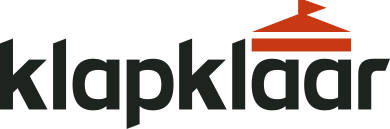
Klapklaar verkoopt easy-up-, stretch-, opblaasbare en stertenten, statafels met rokken en bedrukte hoezen, verlichting en meubilair. Aan iedereen die iets organiseert: van de verjaardag in de tuin tot het eventbureau dat 40 bedrukte hoezen nodig heeft. Je kiest je maat, wij zorgen dat het klaarstaat.
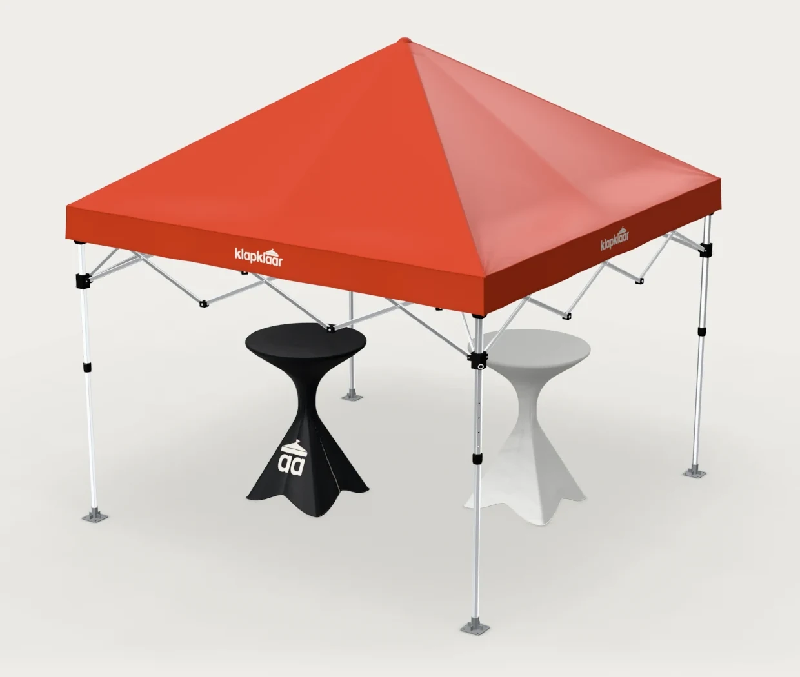
Easy-up partytent 3 × 3 m · Premium · vanaf € 319 voorbeeldGeen letter komt uit een font: elke vorm is getekend met twee maten. STOK 130 voor alles wat draagt, DUN 65 voor de poten, de dakrand en de opening tussen dak en band. Eén hoek, 24°: de koorde van het dak en de sneden van k, l en de armen van k en r. Wat op de grond staat is plat.
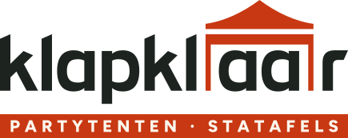
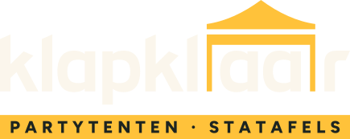
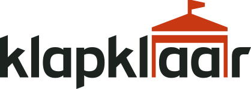
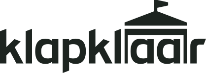
Kleinste poot–letter gedeeld door de afstand tussen twee rechte letters: v4 0,64, v5 1,15. Onder 1 vallen de poten samen met de letters.
| stok (k, l, a, p, r stam) | 130 | 1,00 S |
| kom boven/onder (a, p) | 112 | 0,86 S |
| arm k (loodrecht) | 122 | 0,94 S |
| been k (loodrecht) | 126 | 0,97 S |
| arm r (verticaal) | 121 | 0,93 S |
| luifelband | 130 | 1,00 S |
| tentpoot | 65 | 0,50 S |
Stof- en druktest op het raster (measure.py): dunste vorm 68, nauwste opening 64; kleinste buitenhoek 62°. Alle maten en de volledige afstandentabel: technisch.md §1.
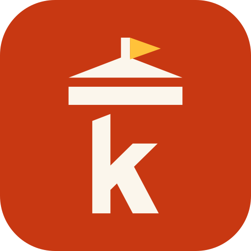
Regel: logo.svg vanaf 149 px breed, logo-klein van 97 tot 149 px, daaronder het beeldmerk. Berekend uit de gemeten kleinste lijn (≥ 2 px) en opening (≥ 1,5 px). In de header: 200 px breed, x-hoogte 23,0 px.
Het beeldmerk is de k van Klapklaar onder dezelfde easy-up. De poten zijn lang: onder de luifel blijft ruimte open, dus het is een tent en geen schuurtje. Het favicon is twee eigen tekeningen op het pixelraster, geen verkleind logo: 16 px de tent als open luifel, 32 px de k onder de tent.
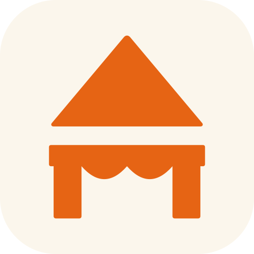
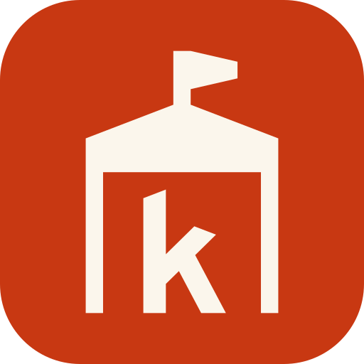
<link rel="icon" type="image/png" sizes="16x16"
href="{{ 'favicon-16.png' | asset_url }}" data-favicon="16">
<link rel="icon" type="image/png" sizes="32x32"
href="{{ 'favicon-32.png' | asset_url }}" data-favicon="32">
<link rel="icon" type="image/png" sizes="192x192"
href="{{ 'favicon-192.png' | asset_url }}">
<link rel="apple-touch-icon" sizes="180x180"
href="{{ 'apple-touch-icon-180.png' | asset_url }}">
Kant-en-klaar in handoff/favicon-head.liquid (met de winkelwagenstand) en handoff/favicon-cart.js. Alleen PNG’s: met een SVG-favicon schaalt de browser één tekening naar elke maat en wordt de 16-px-tekening nooit gebruikt. De stip is Polder: ‘Toegevoegd’. Bestandsnamen en wat er in de theme verandert: technisch.md §6.
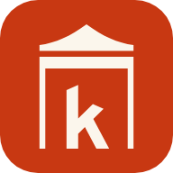
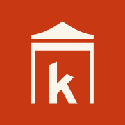
Klaproos is het merk en de koopknop, alleen als vlak; bij hover blijft de knop rood (Klaproos donker). Zon is voordeel en accent. Polder is vertrouwen en alles wat ‘klaar’ is. Een fout is Bordeaux en nooit een knop. Elk gebruikt paar is gemeten (WCAG 2.1): 61 paren, 0 onder de eis.
#C83812#982A0E#FFC23A#154F3E#0E3A2D#1D2420#5D625C#FBF6EC#F2E8D5#EFEDE8#FFFFFF#E4D6BE#8A1538#865800Per stand: label-contrast op de vulling / vorm (vulling of rand) tegen de schemaachtergrond. 30 standen gecontroleerd, 0 onder de eis (label 4,5:1, vorm 3:1). Hover houdt de knop herkenbaar: de koopknop wordt Klaproos donker, de Zakelijk-knop Polder donker, de Zand-knop op Polder Zon; op Inkt krijgt de rode knop een Zand-rand (Klaproos donker haalt daar maar 2,0:1). De omlijnde knop krijgt een lichte tint. Per schema zijn rust en hover van beide knoppen alle vier verschillend.
| Inkt op zand | Lopende tekst op pagina | 14,71:1 | AAA |
| Inkt op duin | Tekst op heroband en chips | 13,04:1 | AAA |
| Inkt op wit | Tekst op kaarten, velden, meldingen | 15,84:1 | AAA |
| Inkt op steen | Zakelijk-blokken, tabellen, badges op het beeldvlak | 13,54:1 | AAA |
| Inkt op zon | Actie-badge en actieprijs-label | 9,83:1 | AAA |
| Inkt op lijn | Tekst op een Lijn-chip of scheiding | 11,06:1 | AAA |
| Kiezel op zand | Specs, btw-regel | 5,79:1 | AA |
| Kiezel op duin | Specs op Duin | 5,13:1 | AA |
| Kiezel op wit | Specs op kaart, van-prijs | 6,24:1 | AA |
| Kiezel op steen | Specs in Zakelijk, bijschrift op beeldvlak | 5,33:1 | AA |
| Polder op zand | Op voorraad, links in Zakelijk | 8,78:1 | AAA |
| Polder op wit | Op voorraad op kaart, succesmelding (kop) | 9,46:1 | AAA |
| Polder op duin | Op voorraad op Duin | 7,78:1 | AAA |
| Polder op steen | Zakelijk-koppen, badge Staffelprijs | 8,09:1 | AAA |
| Bordeaux op wit | Foutmelding (kop), veldfout onder invoerveld | 9,35:1 | AAA |
| Bordeaux op zand | Veldfout op pagina | 8,68:1 | AAA |
| Bordeaux op steen | Veldfout in Zakelijk-formulier | 8,00:1 | AAA |
| Oker op zand | Leverbaar over 2–3 weken | 5,72:1 | AA |
| Oker op wit | Levertijd op kaart, let-op-melding (kop) | 6,16:1 | AA |
| Oker op duin | Levertijd op Duin | 5,07:1 | AA |
| Oker op steen | Levertijd in Zakelijk | 5,26:1 | AA |
| Wit op klaproos | Primaire knop | 5,21:1 | AA |
| Wit op klaproos donker | Primaire knop: hover en ingedrukt | 7,86:1 | AAA |
| Zand op polder | Zakelijk-knop, Toegevoegd, footer, utility-balk, badge Nieuw | 8,78:1 | AAA |
| Wit op polder | Polder-knop met wit label | 9,46:1 | AAA |
| Zand op polder donker | Zakelijk-knop: hover en ingedrukt | 11,73:1 | AAA |
| Inkt op tint zand | Omlijnde knop, hover op pagina | 12,60:1 | AAA |
| Inkt op tint wit | Omlijnde knop, hover op kaart | 13,53:1 | AAA |
| Inkt op tint duin | Omlijnde knop, hover op Duin | 11,20:1 | AAA |
| Inkt op tint steen | Omlijnde knop, hover in Zakelijk | 11,65:1 | AAA |
| Zand op inkt | Badge Met jouw logo, donkere banden | 14,71:1 | AAA |
| Inkt op zand | Zand-knop op Polder en Inkt (Inkt label) | 14,71:1 | AAA |
| Zon op inkt | Actie en logo-tent op Inkt | 9,83:1 | AAA |
| Zon op polder | Actie en logo-tent op Polder | 5,87:1 | AA |
| Klaproos op zand | Display-kop op pagina (≥ 24 px vet) | 4,84:1 | AA groot |
| Klaproos op wit | Display-kop op kaart (≥ 24 px vet) | 5,21:1 | AA groot |
| Kiezel op wit | Rand invoerveld, stippelrand uitgeschakelde knop | 6,24:1 | ≥ 3:1 |
| Kiezel op zand | Rand invoerveld op pagina | 5,79:1 | ≥ 3:1 |
| Kiezel op duin | Rand invoerveld / uitgeschakeld op Duin | 5,13:1 | ≥ 3:1 |
| Kiezel op steen | Rand invoerveld in Zakelijk | 5,33:1 | ≥ 3:1 |
| Klaproos op zand | Primaire knop tegen pagina | 4,84:1 | ≥ 3:1 |
| Klaproos op duin | Primaire knop tegen Duin | 4,29:1 | ≥ 3:1 |
| Klaproos op wit | Primaire knop tegen kaart | 5,21:1 | ≥ 3:1 |
| Klaproos op inkt | Primaire knop op Inkt-vlak | 3,04:1 | ≥ 3:1 |
| Klaproos donker op zand | Primaire knop hover tegen pagina | 7,29:1 | ≥ 3:1 |
| Klaproos donker op wit | Primaire knop hover tegen kaart | 7,86:1 | ≥ 3:1 |
| Klaproos donker op duin | Primaire knop hover tegen Duin | 6,47:1 | ≥ 3:1 |
| Inkt op zand | Omlijnde knop, focusring op licht | 14,71:1 | ≥ 3:1 |
| Inkt op wit | Focusring op kaart | 15,84:1 | ≥ 3:1 |
| Inkt op duin | Focusring op Duin | 13,04:1 | ≥ 3:1 |
| Inkt op steen | Focusring, omlijnde knop in Zakelijk | 13,54:1 | ≥ 3:1 |
| Polder op zand | Toegevoegd tegen pagina | 8,78:1 | ≥ 3:1 |
| Polder op wit | Toegevoegd tegen kaart, voorraadstip | 9,46:1 | ≥ 3:1 |
| Polder op steen | Zakelijk-knop tegen Steen | 8,09:1 | ≥ 3:1 |
| Polder donker op steen | Zakelijk-knop hover tegen Steen | 10,80:1 | ≥ 3:1 |
| Zand op polder | Focusring, Zand-knop en hover-rand op Polder | 8,78:1 | ≥ 3:1 |
| Zand op inkt | Focusring en hover-rand op Inkt | 14,71:1 | ≥ 3:1 |
| Bordeaux op wit | Linkerrand + icoon foutmelding, rand veld met fout | 9,35:1 | ≥ 3:1 |
| Oker op wit | Linkerrand + icoon let-op, halve stip levertijd | 6,16:1 | ≥ 3:1 |
| Oker op zand | Halve stip levertijd op pagina | 5,72:1 | ≥ 3:1 |
| Zand op klaproos | Logo in Zand op Klaproos-doek of -vlak (grafisch) | 4,84:1 | ≥ 3:1 |
| Zon op zand | Zon als tekst of rand op licht | 1,50:1 | nee |
| Zon op wit | Zon als tekst of rand op wit | 1,61:1 | nee |
| Klaproos op duin | Klaproos als tekst op Duin (ook niet als kop) | 4,29:1 | nee |
| Klaproos op steen | Klaproos als tekst op Steen | 4,45:1 | nee |
| Klaproos op inkt | Klaproos-tekst op Inkt | 3,04:1 | nee |
| Klaproos op polder | Klaproos op Polder (ook als knop of tent) | 1,82:1 | nee |
| Kiezel op inkt | Kiezel op donker | 2,54:1 | nee |
| Kiezel op polder | Kiezel op Polder | 1,52:1 | nee |
| Polder op inkt | Polder op Inkt (knop verdwijnt) | 1,67:1 | nee |
| Wit op bordeaux | Bordeaux als gevuld vlak (fout is nooit een knop) | 9,35:1 | nee |
| Zon op klaproos | Zon-tent op Klaproos (logo op Klaproos is één kleur Zand) | 3,23:1 | nee |
| Klaproos donker op inkt | Klaproos donker als hover op Inkt (vorm verdwijnt: daar hover = Zand-rand) | 2,02:1 | nee |
| Polder op polder-donker | Polder donker als vlak naast Polder (alleen als knopstand) | 1,34:1 | nee |
| Paar | ΔE00 | contrast |
|---|---|---|
| Zand – Duin | 4,7 | 1,13:1 |
| Zand – Steen | 3,0 | 1,09:1 |
| Zand – Wit | 5,1 | 1,08:1 |
| Duin – Steen | 6,1 | 1,04:1 |
| Duin – Wit | 9,6 | 1,22:1 |
| Steen – Wit | 4,4 | 1,17:1 |
Vier vlakken, elk met een eigen taak: Zand pagina, Wit kaart, Duin warm accent, Steen koel (productbeeld en Zakelijk). Steen ligt het dichtst bij Zand (ΔE 3,0). Daarom is border.card (1 px Lijn) de token-default voor elke kaart, en krijgt een los Steen-vlak border.media.
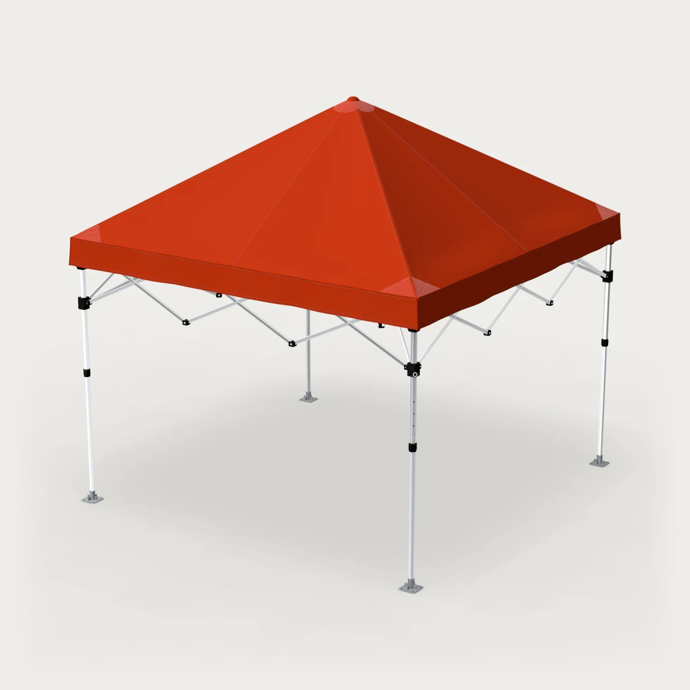
De winkel verkoopt doek. Daarom per kleur de referentie voor elk materiaal, per methode de kleinste maat (uit de meting in §01), en een regel die trapping overbodig maakt: twee kleuren raken elkaar op doek nooit.
| Kleur | CIELAB D50 | CMYK gestreken FOGRA39 | Pantone C (papier) | Pantone TCX (textiel) | RAL Classic (lak, frame, bord) | Oracal 651 (snijfolie) | Afgetekend datum / wie |
|---|---|---|---|---|---|---|---|
Klaproos#C83812 | L 46,6 a 56,4 · b 54,0 | C14 M89 Y100 K4 ongestr.: C10 M93 Y100 K3 (proef-ΔE 11,5) | 2349 C ΔE 1,6 2349 U: kiezen op de U-waaier | 17-1449 TCX ΔE 2,0 Pureed Pumpkin | RAL 2001 Red orange ΔE 2,2 bron A: RAL 2002 Vermilion (ΔE 4,2) | 651-047 orange red ΔE 2,3 | ______ |
Zon#FFC23A | L 82,5 a 13,9 · b 72,0 | C0 M28 Y83 K0 ongestr.: C0 M21 Y83 K0 (proef-ΔE 4,5) | 136 C ΔE 1,2 136 U: kiezen op de U-waaier | 13-0759 TCX ΔE 2,2 Solar Power | RAL 1028 Melon yellow ΔE 6,5 bron A: RAL 1021 Colza yellow (ΔE 3,4) | 651-021 yellow ΔE 3,6 | ______ |
Polder#154F3E | L 29,6 a -23,0 · b 4,4 | C87 M42 Y73 K45 ongestr.: C91 M45 Y75 K33 (proef-ΔE 10,8) | 6161 C ΔE 1,6 6161 U: kiezen op de U-waaier | 19-5420 TCX ΔE 3,4 Evergreen | RAL 6016 Turquoise green ΔE 3,3 bron A: RAL 6028 Pine green (ΔE 3,9) | 651-613 forest green ΔE 4,3 | ______ |
Inkt#1D2420 | L 13,4 a -4,1 · b 1,6 | C76 M61 Y66 K78 ongestr.: C84 M73 Y62 K64 (proef-ΔE 14,3) | Black 3 C ΔE 1,9 Black 3 U: kiezen op de U-waaier | 19-5708 TCX ΔE 3,1 Jet Set | RAL 7021 Black grey ΔE 5,6 bron A: RAL 9017 Traffic black (ΔE 6,3) | 651-070 black ΔE 8,8 | ______ |
Zand#FBF6EC | L 97,1 a 0,5 · b 5,4 | C2 M4 Y9 K0 ongestr.: C2 M4 Y7 K0 (proef-ΔE 4,5) | 9224 C ΔE 2,8 9224 U: kiezen op de U-waaier | 11-0607 TCX ΔE 2,1 Sugar Swizzle | RAL 9001 Cream ΔE 2,9 | 651-010 white ΔE 8,1 | ______ |
Bronnen (open datasets, onofficieel; commits in technisch.md §4): Pantone C als Lab (aj90909/unofficial-pantone-solid-coated-2024-v5), Pantone TCX als sRGB (pedroduke/pantone-tcx), RAL Classic uit twee bronnen die onderling verschillen (office952/workos-vscode en ieskudero/ral-colors), Oracal 651 van de ORAFOL-productpagina (via office952/workos-vscode). CMYK met Adobe Coated FOGRA39 en Uncoated FOGRA29. Op ongestreken papier verschuift Klaproos zichtbaar (proef-ΔE 11,5): daar Pantone-steunkleur of een drukproef.
| Methode | Kleinste lijn / opening | logo | logo-klein | mark | mark-klein |
|---|---|---|---|---|---|
| Borduren (satijnsteek) | 1,2 / 1 mm | 99 mm | 61 mm | 20 mm | 14 mm |
| Flock-transfer (geplot) | 1,5 / 1,5 mm | 149 mm | 91 mm | 25 mm | 17 mm |
| Flex-/snijfolie (textiel, geplot) | 1 / 1 mm | 99 mm | 61 mm | 17 mm | 12 mm |
| Snijfolie op bus/bord (Oracal) | 1,5 / 1,5 mm | 149 mm | 91 mm | 25 mm | 17 mm |
| Zeefdruk op textiel | 0,5 / 0,6 mm | 60 mm | 37 mm | 10 mm | 7 mm |
| DTF-transfer | 0,5 / 0,5 mm | 50 mm | 31 mm | 9 mm | 6 mm |
| Sublimatie / digitaal op polyester (luifel, rok) | 0,3 / 0,3 mm | 30 mm | 19 mm | 5 mm | 4 mm |
| Offset / digitaal op papier | 0,15 / 0,15 mm | 15 mm | 10 mm | 3 mm | 2 mm |
| Scherm | 2 px / 1,5 px | 149 px | 97 px | 33 px | 23 px |
Gemeten: kleinste lijn / opening: logo.svg 65 / 44 op 4351 breed (tentpoot / k–l), logo-klein 100 / 80 op 4820 breed, mark 65 / 64 op 1050 breed, mark-klein 100 / 100 op 1110 breed. Lijn = de kleinste van bouwmaat en rastermeting; opening = de kleinste van alle afstanden tussen losse vormen en de rastermeting. De mm-waarden per methode zijn werkaannames, niet met een leverancier gecontroleerd: leg ze voor aan je borduurder, drukker en belettering. Luifel-lock-up pas vanaf 160 mm.
Op doek, folie en papier hebben letters en tent elk één kleur en liggen minstens 101 eenheden uit elkaar. Er is dus geen overlap en geen trap nodig. Alle drukbestanden zijn echte contouren zonder overlap, in één pad.
#C83812doel#C2350DΔE 1,5#B53007ΔE 4,5#AA2D05ΔE 6,8Gemeten op img/tent-3x3-klaproos-hero.webp (v5-render: ingangskleur #AF2D03, afwerking mat): gemiddelde in lineair licht van de verzadigde dakpixels, per lichtheidsband. Eis: belicht vlak ΔE00 ≤ 3. De schaduwzijde is bewust donkerder: dat is licht, geen kleurfout.
Figtree is een van de gangbaarste gratis letters in Shopify, en dat is een keuze. Het eigen karakter zit in het getekende woordmerk, de tent en de kleuren; de letter is gereedschap voor prijzen, maten en specs. Vier gewichten uit Shopify’s eigen fontbibliotheek.
font_modify. Controle: kies Figtree ExtraBold in de theme-editor. Bronnen: technisch.md §8.De rok past op statafels van Ø 70–85 cm. Dakdoek van 320 g/m² polyester, frame van 40 mm aluminium.
| Aantal | Per stuk | Totaal min. aantal |
|---|---|---|
| 1–9 | € 16,95 | € 16,95 |
| 10–49 | € 14,95 | € 149,50 |
| 50–99 | € 12,95 | € 647,50 |
| 100+ | € 11,45 | € 1.145,00 |
tabular-nums op prijzen, maten, aantallen, staffels en levertijden. Notatie € 1.145,00 · 3 × 3 m · Ø 80 cm · 320 g/m² · 2–3 weken · incl. btw. Naast het logo alleen kapitalen (descriptor, ZAKELIJK): Figtree heeft een tweeverdiepings-a, het woordmerk een eenverdiepings-a.
Productbeelden zijn fotorealistische 3D-renders op Steen, vanuit vaste standpunten, met gemeten merkkleur. Voor vertrouwen naast gevestigde winkels komen er echte foto’s van opbouw en gebruik bij: de eigenaar werkt in de verhuur en staat elk weekend op events. Tot die er zijn: renders van opstellingen, nooit stockfoto’s.
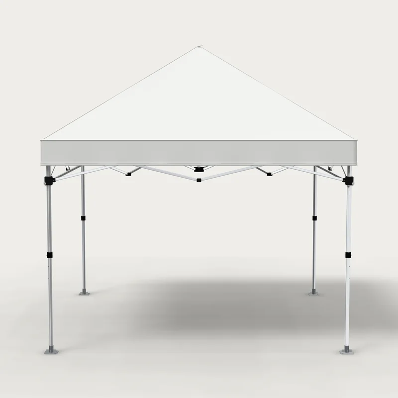
Vooraanzicht · 0°/6°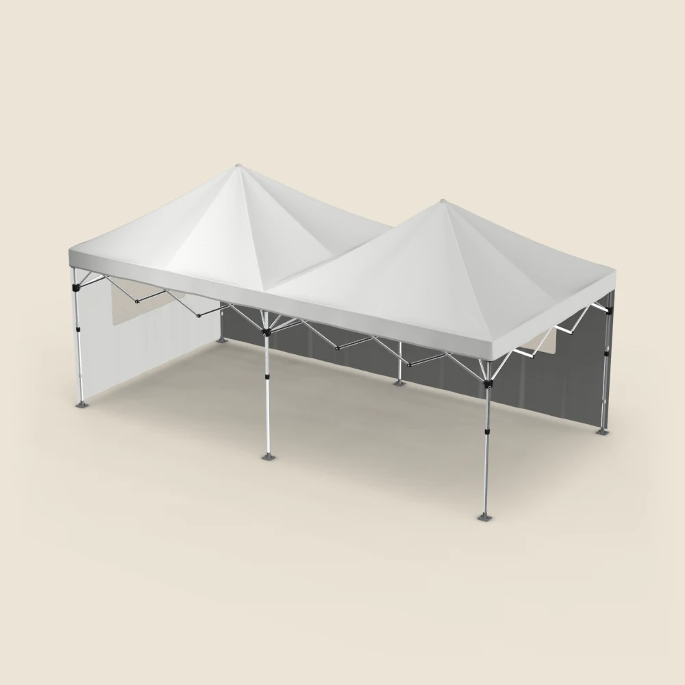
Variant · met zijwanden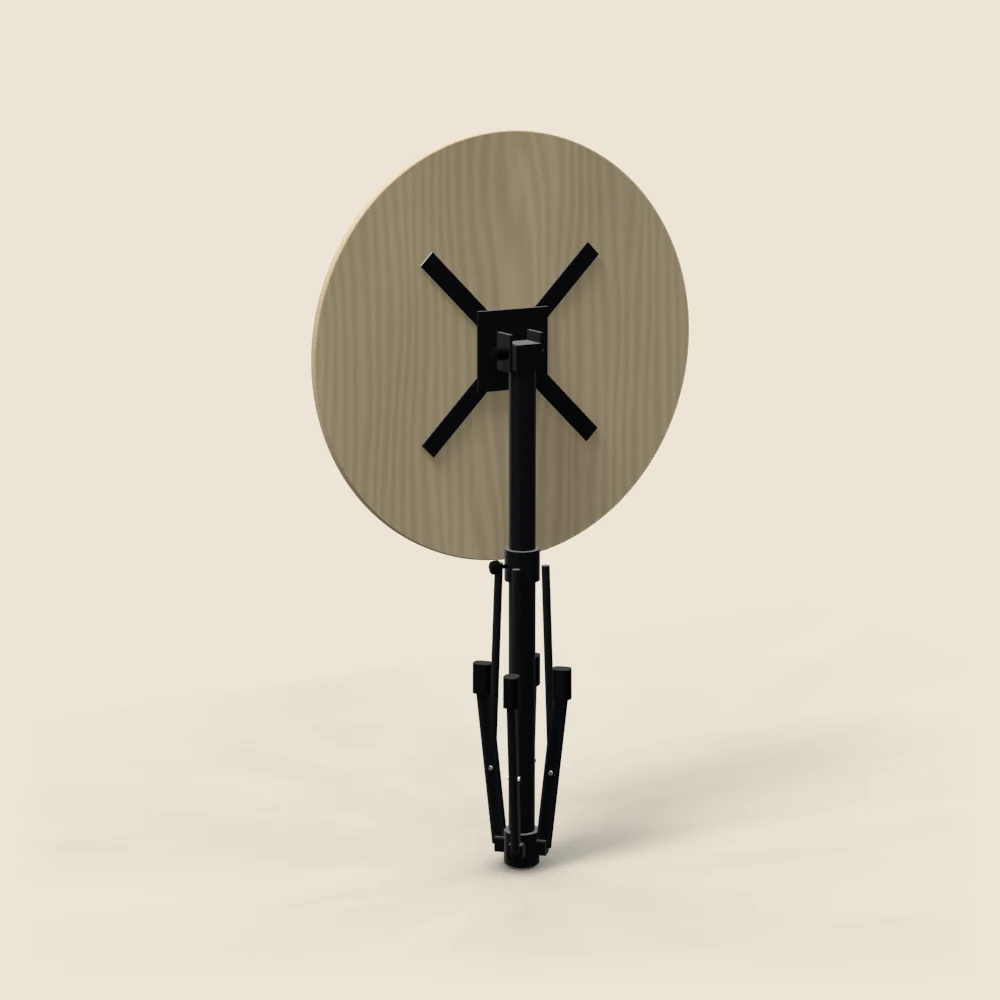
Detail · ingeklapt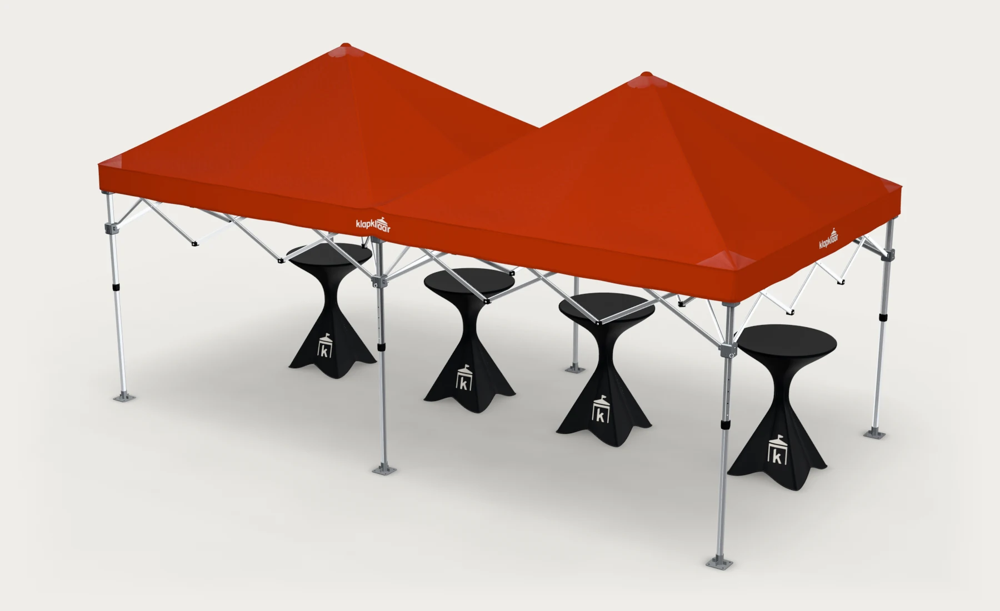
Opstelling · zakelijk (render, voorbeeldopdruk)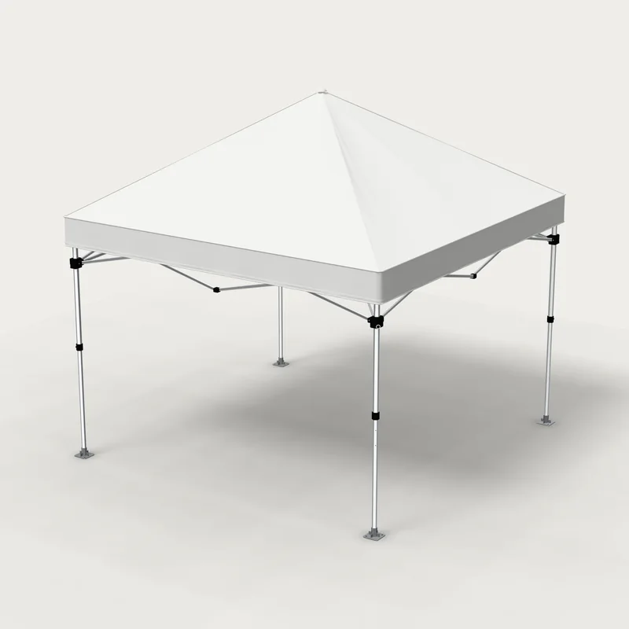
Partytent 3x3 wit
€ ···Easy up tent 3x3
€ ···Easy-up partytent 3×3 m Premium Klaproos
€ 319 KlapklaarVouwtent 3x6 met wanden
€ ···Pop-up tent 3x3
€ ···Feedbeeld = de Klaproos-variant zonder opdruk op Steen: valt op tussen witte tenten op wit en is toch het echte product. Alleen als de leverancier Klaproos-doek levert (claim); anders zijn eigen ‘rood’ renderen zoals het is. Google Merchant Center-beeldeisen vóór livegang controleren.
Zo valt het merk samen in de Shopify-onderdelen: utility-balk, header met het inline logo, hero met prijschip, kaarten met specregel en omlijnde snelknop, de koopkolom met live totaal en de vertrouwensband. Prijzen en claims zijn voorbeelden.
Easy-up tenten, statafels met rokken, verlichting en meubilair. Voor je tuinfeest, je club of je evenement.
Voor bedrijf, club of verhuur? Vraag een offerte op maat aan
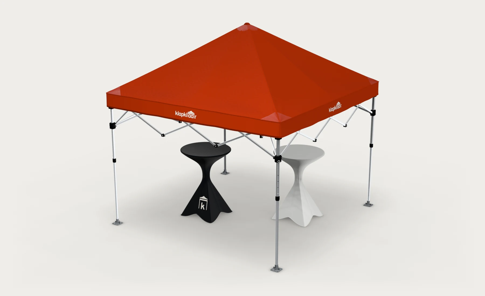
Easy-up partytent 3 × 3 m · Premium · 320 g/m² — vanaf € 319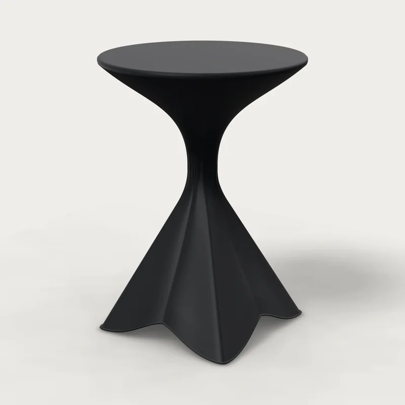
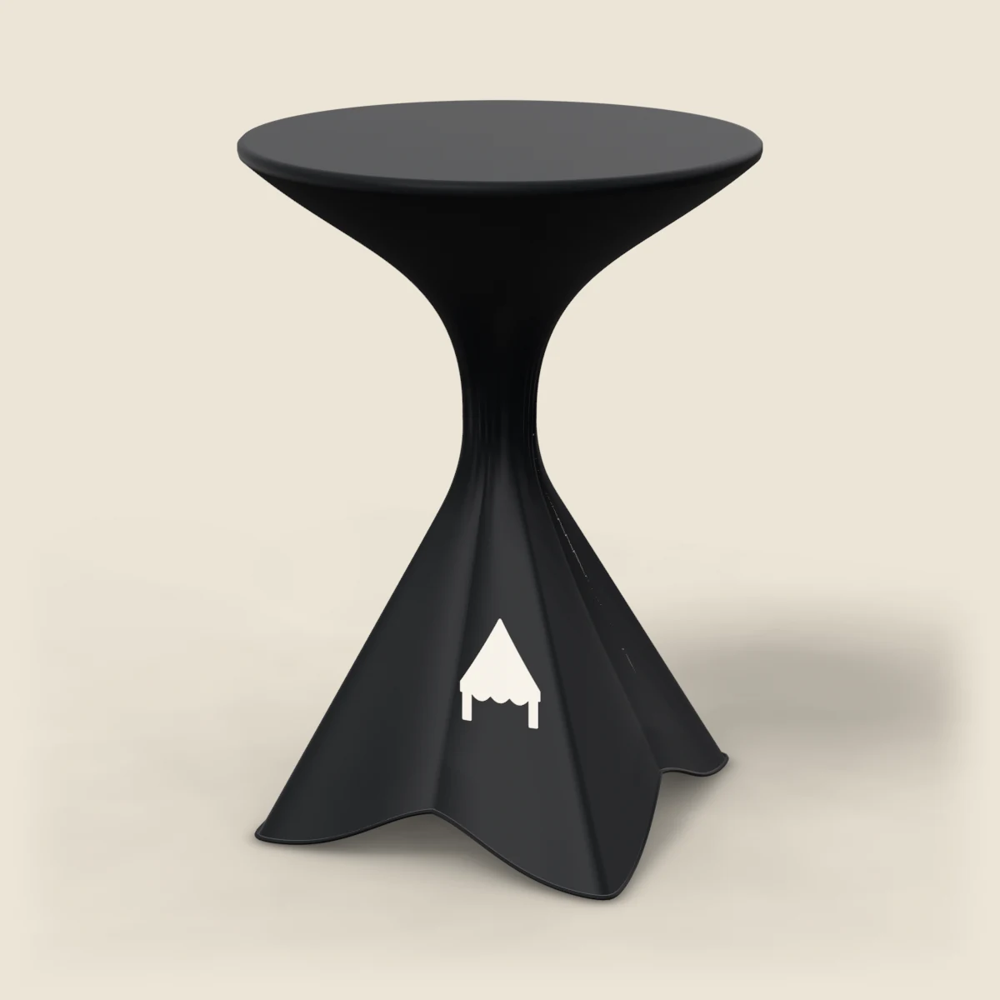
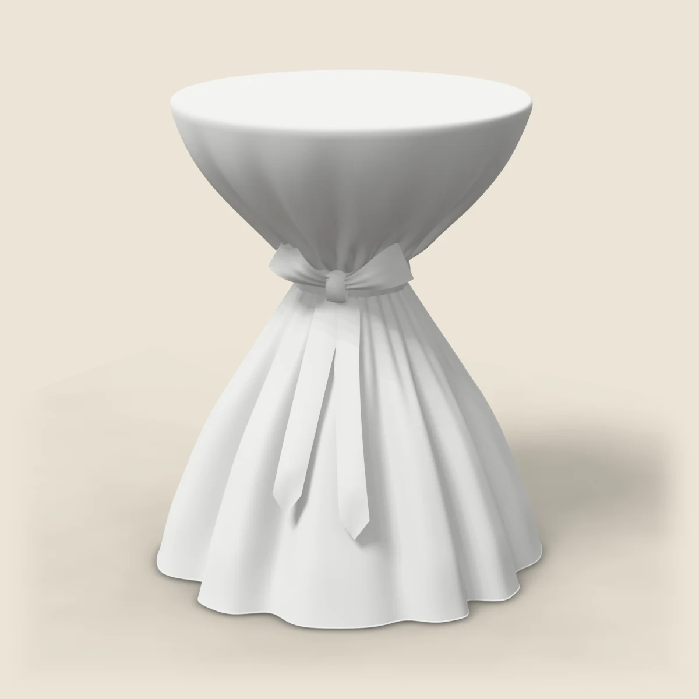
payment_type_svg_tag), alleen ingeschakelde methoden.Een knop is gevuld of omlijnd. Hover houdt de knop herkenbaar: de koopknop blijft rood, de omlijnde knop krijgt een lichte tint. ‘Toegevoegd’ is Polder met een vinkje. Een melding is een Wit vlak met een gekleurde linkerrand, een icoon en een kop: fout Bordeaux, let op Oker, gelukt Polder.
Voorraad heeft drie vormen, niet alleen drie kleuren: volle stip, halve stip, open ring. Altijd met tekst.
Zonde van een goed feest. Begin bij de partytenten, of kijk wat er in de actie zit.
Bekijk partytentenVoor horeca, eventbureaus, verhuurbedrijven, scholen en verenigingen: Steen en Polder, prijzen eerst excl. btw, geen Klaproos-vlakken, geen knipoog en geen vlaggenlijn. Zelfde merk, andere toon: de stijl van offerte, staffel en drukproef.
Bestel op factuur, met staffelprijzen vanaf 10 stuks en je eigen logo op tent of hoes. Je vaste contactpersoon belt je terug. claims
| Aantal | 1 kleur | 2 kleuren | Levertijd |
|---|---|---|---|
| 10–24 | € 33,00 | € 37,10 | na akkoord |
| 25–49 | € 29,70 | € 33,40 | na akkoord |
| 50–99 | € 26,40 | € 29,70 | na akkoord |
| 100+ | offerte op maat | ||
Voorbeeldprijzen excl. btw, door de eigenaar vast te stellen.
Eén drukkleur: Zand op Klaproos of Inkt, Inkt op wit doek. Het woordmerk is 54% van de luifelhoogte en nooit breder dan de helft van een zijde. Op de statafelrok het beeldmerk: de k onder de tent, ook op een gebogen stretchrok goed te lezen. Maten en methodes: §04.
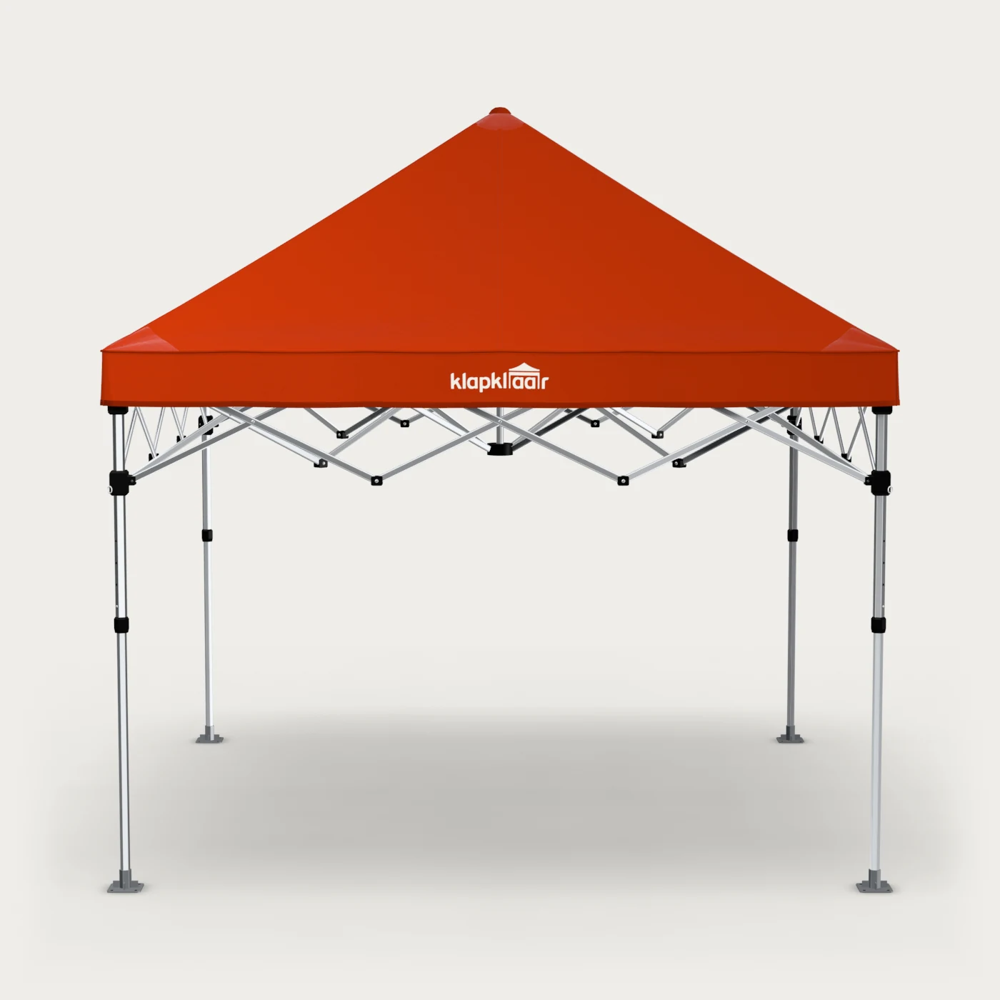
Lijniconen op een raster van 24 px, lijn 2 px, ronde hoeken, altijd currentColor en altijd één kleur. Geen gevulde of meerkleurige iconen, geen emoji. Een icoon staat altijd naast tekst of heeft een aria-label.
23 iconen, allemaal als <symbol> in deze pagina: over te nemen als snippet icon-sprite.liquid. Het tent-icoon volgt het logo: doorhangend dak, band, twee poten, geen vlag.
Feestelijke scheiding op home, actie en de bestelbevestiging. Nooit op Polder, nooit in Zakelijk, offerte of checkout, en nooit bij een foutmelding.
20 px met lijn 1,75 px naast labels van 14–15 px; 24 px met lijn 2 px in de header.
Alsof je de buurman helpt een tent op te zetten. Je/jij, antwoord eerst, concreet, hooguit één knipoog per scherm. Zakelijk en juridisch: volledig en zonder knipoog. Microcopy voor elk onderdeel van de winkel staat in brand.md §7.2.
Uitklappen. Neerzetten. Feest.Easy-up tenten, statafels met rokken, verlichting en meubilair. Voor je tuinfeest, je club of je evenement.
Easy-up partytent 3 × 3 m PremiumAluminium frame · 320 g/m² dakdoek · Op voorraad
Staat in je winkelwagen.Statafelrok stretch Ø 80 cm, zwart · 1 ×. Nog een statafel erbij?
Nog niks in je winkelwagen.Zonde van een goed feest. Begin bij de partytenten.
Staat stevig, ook als het waait.Zet elke poot vast met haringen of een voetgewicht van 15 kg. Bij harde wind: dak eraf.
Offerte op maat aanvragenVul aantal en gewenste leverdatum in. Je ontvangt de offerte per e-mail.
Een tekst die voor elk product werkt, weet niet of het product een de-woord is (de tent, de statafelrok) of een het-woord (het verlengsnoer, het kussen, het pakket). Noem het product, of schrijf zonder verwijswoord: ‘Staat in je winkelwagen.’ In een tekst voor één product mag het wel.
Twee controles kunnen alleen buiten de bouwomgeving: de naam toetsen en het merk naast Outmate en Statafelshop leggen. Hieronder staat precies wat je doet, met een beslisregel. Samen ongeveer een uur. Doe dit vóór je iets registreert, laat drukken of bestelt.
Alles schoon? Leg het merk voor aan een merkenadviseur. Er is nu nog geen bewijs dat de naam vrij of bezet is. Begin bij elk register op de hoofdpagina.
| Klapklaar | Outmate | Statafelshop | |
|---|---|---|---|
| Naam / klank | klap-klaar, 2 lettergr., NL | invullen | invullen |
| Logo-vorm | easy-up met doorhangend dak over de aa | screenshot header | screenshot header |
| Merkkleur | Klaproos #C83812 + Polder + Zon | pipet-hex | pipet-hex |
| Letter | getekend woordmerk, Figtree | invullen | invullen |
| Productbeeld | renders op Steen, Klaproos-tent eerst | screenshot categorie | screenshot categorie |
| Toon | je/jij, nuchter, één knipoog | invullen | invullen |
Beslisregel: lijkt één rij sterk op een van beide (zelfde kleurfamilie als hoofdkleur, zelfde motief, verwisselbare naam), ga dan niet live, maar pas dat onderdeel eerst aan. Kleuren staan op één plek (tokens.json). Twee bedrijven: Outmate.nl is van Outmate B.V. (Staphorst); Statafelshop.nl noemt Deadan.com bv (bron: reference/dossier.md).
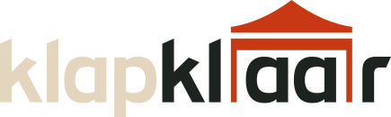